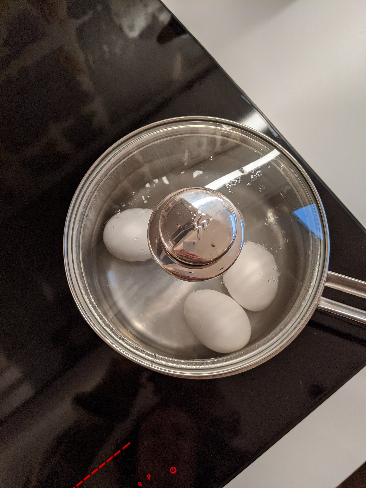
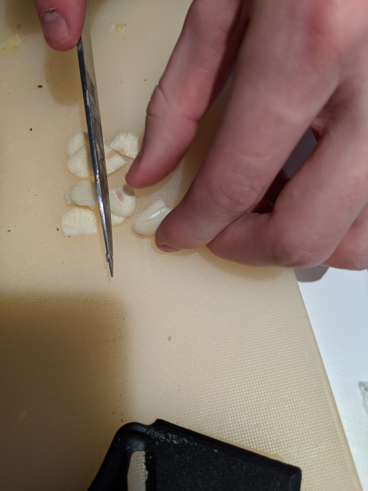
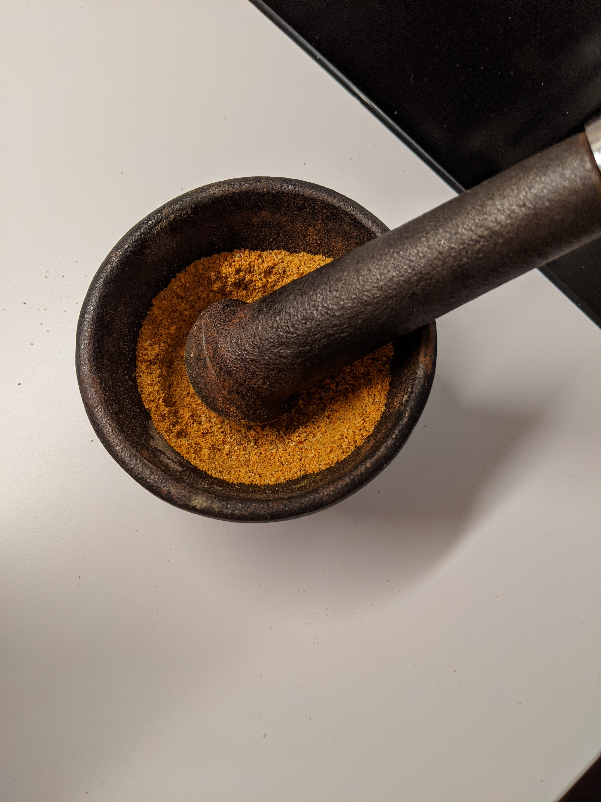
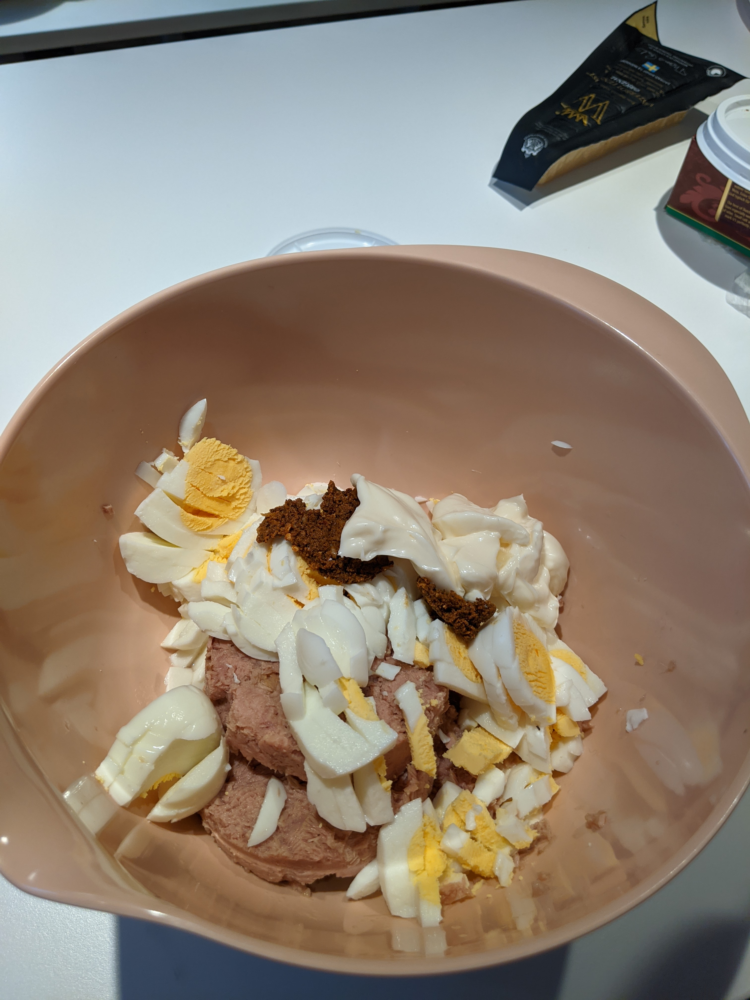
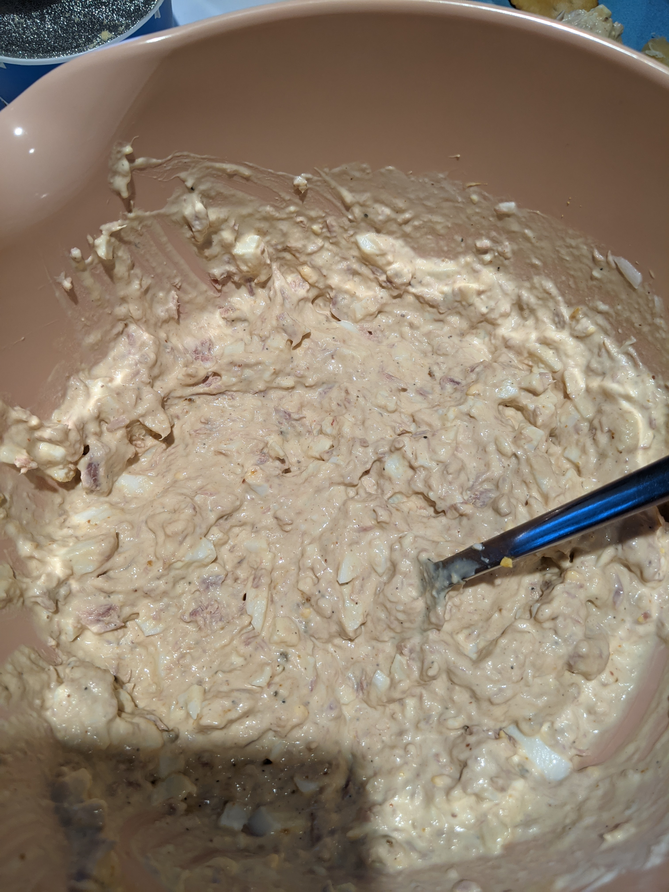
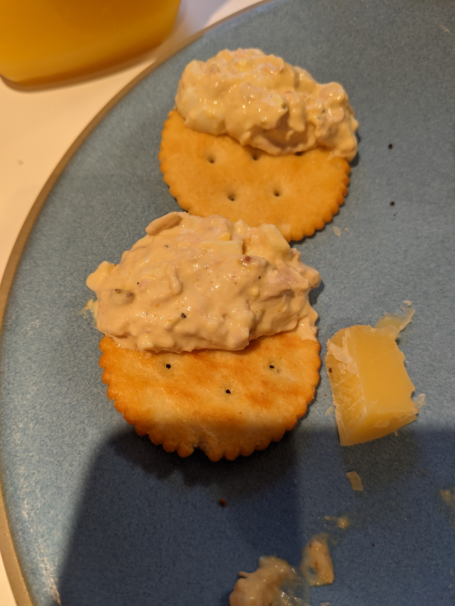

Túnfisksalat, þegar litið er á sögu hráefna þess í gegn um mannkynssöguna, er tiltölulega nýtt fyrirbæri.
Á sjöunda áratugnum fór fólk vestanhafs að nota hráefni saman í matseldina sína sem höfðu ekki sést mikið áður
og munu vonandi ekki sjást mikið saman í framtíðinni heldur.
Hráefni eins og ólífur, gelatín og svo auðvitað majónes.
Majónes, eins og við þekkjum það í dag, kom frá Menorca á 18. öld.
Nokkrum árum eftir fæðingu þess breytti franski kokkurinn,
Marie-Antoine Carême, upprunalegu uppskriftinni og úr varð majónesið sem við þekkjum í dag.
Í bókinni “Grænmeti og Ber allt árið” eftir Helgu Sigurðardóttir frá 1940 má finna einfalda uppskrift af majónesi.
Hráefnin eru aðeins fjögur, 2 eggjarauður, 1 tsk. edik, salt og 16 matskeiðar af olíu.
Þetta er eina beina vitnunin í majónes í bókinni en hins vegar eru uppskriftir að salötum sem nota sömu hráefni á nokkrum stöðum.
Þannig er hægt að sjá að 1940 var fólk aðeins hársbreidd frá því að uppgötva leyndarmál túnfisksalatsins en það reyndist leyndarmál enn þá.
Nú til dags er majónes gríðarlega vinsælt við matargerð, bæði eitt og sér en líka í sósur og salöt.
Majónessalöt eru líka vinsæl bæði heimagerð og fersk úr búðinni,
vinsælasta salatið er þó túnfisksalatið og það þarf eitt lykilhráefni til þess að flokkast sem túnfisksalat.
Túnfisk.
Túnfiskur hefur verið veiddur í 2000 ár og eru elstu heimildir um veiðar á Túnfiski raktar til stranda Miðjarðarhafsins þar sem Fönikíumenn stofnuðu veiðihús (e. fisheries).
Túnfiskur hefur lengi vel verið vinsæll hjá fræga hjá ríka og fræga fólkinu,
Aristóteles skrifaði um túnfisk, þá sérstaklega bláuggatúnfisk, í bókinni sinni “Um tilurð dýra” árið 350 f.kr.
Bláuggatúnfiskur er dýrasta túnfisktegundin nú til dags þar sem hann var nánast veiddur til útrýmingar
vegna mikillar eftirspurnar. En þrátt fyrir útrýmingarhættu á bláuggatúnfisk eru margar aðrar tegundir af túnfisk til
í höfum heimsins. Ein svoleiðis tegunda er albacore túnfiskurinn sem er líka sá túnfiskur sem er mest notaður til
niðursuðu. Það var samt ekki fyrr en 1904 sem við förum að sjá niðursoðin túnfisk. Sardínur höfðu verið til löngu áður
niðursoðnar, en vegna vinsælda þeirra var erfiðara að veiða þær. Það þurfti nýjan fisk til að setja í dósir og
túnfiskurinn varð fyrir valinu þar sem hann var með milt bragð sem var ekki allt of fiskilegt. Albacore túnfiskur er
ennþá til í miklu magni, bæði í Atlants- og Kyrrahafinu ólíkt bláugga túnfisknum. Eftir að það var búið að uppgötva
leyndardóma niðursoðna túnfisksins tók það ekki langann tíma fyrir túnfiskinn að taka yfir markaðinn og verða að fyrirbærinu
sem allir vita hvað er nú til dags. En túnfisksalat er ekki túnfisksalat nema það innihaldi að minnsta kosti jafn mikið af
eggjum og túnfiski.
Eggjaát hefur átt sér stað í langan tíma, alveg frá því að fyrstu manneskjurnar stigu þessa jörð eða fyrir
um 6 milljónum ára. Elduð egg eru hins vegar nýrra fyrirbæri en það var byrjað að elda egg fyrir um milljón
árum. Árið 5000 fyrir Krist þegar pottar voru til byrjaði fólk svo að sjóða eggin. Til að harðsjóða egg þarf
fullan pott af vatni, síðan þarf að leggja egg í pottinn og kveikja undir. Þegar vatnið nær suðu þá má slökkva
undir og láta eggin bíða í um 8 mínútur. Það er ekki víst að forn Rómverjarnir hafi notað nákvæmlega þessa
uppskrift en eggin vöktu miklar vinsældir á meðal þeirra. Rómverja átu svo mikið af harðsoðnum eggjum og þá
aðallega í forrétt. Þessi matarhefð var svo víðtæk hjá þeim að úr varð orðatiltækið “ab ova ad mala”,
frá eggjum til epla, frá forrétt til eftirrétta eða frá byrjun til enda. Rómverjar voru samt ekki bara
hrifnir af harðsoðnum eggjum heldur ýmsu grænmeti líka eins og til dæmis lauknum.
Laukurinn er eitt af elsta ræktaða grænmeti í sögunni. Hann á upptök sín að rekja til mið-Asíu
þaðan dreifði hann svo úr sér yfir allan heiminn. Það eru ekki allir sagn- og fornleifafræðingar sammála
um það hvaðan laukurinn kom en flestir trúa því að hann hafi komið frá Kína. Það er auðvelt að rækta lauk í
allskonar jarðvegi, hitastigi og veðurfari. Í kringum 3500 fkr. fór fólk að rækta lauk í miklu magni þetta
gerði það að verkum að hópar sem notuðu laukinn mikið urðu fljótt að treysta mikið á laukinn fyrir næringu
sinni. Nú til dags er laukurinn notaður í allskonar matseld alls staðar í heiminum. Laukur er samt
regnhlífarhugtak yfir margar tegundir af laukum, sá algengasti verandi gulur matarlaukur, en það eru
náttúrulega margar aðrar tegundir eins og til dæmis skarlatslaukur og auðvitað hvítlaukur.
Hvítlaukur er einn elsti þekkti bragðbætir sem mannkynið þekkir. Það er hægt að rekja rætur hvítlauks
til margra mismunandi hópa fólks víðs vegar um hnöttinn. Hvítlaukurinn hóf ferð sína í mið-asíu fyrir um
það bil 12.000 árum, þaðan dreifðist hann til miðausturlanda og Afríku og þá var ekki langt að fara til
Evrópu. Þrátt fyrir að hvítlaukurinn sé kannski elsta og þekktasta krydd sem maðurinn þekkir þá eru ýmis
önnur krydd til í heiminum.
Síðan manneskjan byrjaði að elda hafa krydd verið partur af matseldinni. Veiðimenn á steinöld vöfðu
kjötinu sínu í lauf af runnum og óviljandi uppgötvuðu að það gerði bragðið af kjötinu betra. Og til að gera
langa sögu stutta þá rataði krydd allt út um heiminn og endaði í túnfisksalatinu mínu.
En þá er spurningin, hvað er uppskriftin að túnfisksalatinu mínu?
Það er ekkert eitt rétt svar við þessari spurningu þar sem það að búa til gott túnfisksalat er meira listform en vísindi.
Þrátt fyrir það þá er ég með litla uppskrift að túnfisksalati sem hægt er að byggja út frá.
Hráefni:
Aðferð:
Það fyrsta sem á að gera er að byrja að sjóða eggin,
af öllum hráefnunum eru það eggin sem taka lengstan tíma að undirbúa þannig þau fá
að malla á meðan við undirbúum restina.

Næsta skref er að skera laukinn og hvítlaukinn, passa að snerta ekki augun.

Þegar það er búið að skera laukinn og hvítlaukinn er um að gera að byrja á kryddblöndunni.
Kryddblandan er einn mikilvægasti partur túnfisksalatsins en er oft vanmetin.
Náðu í þau krydd sem eru nefnd í hráefnunum eða bara þau krydd sem þér lýst vel á og skelltu
þeim í mortél ásamt skorna hvítlauknum. Svo skaltu blanda þessu saman þangað til úr verður vel lyktandi mauk.

Núna ættu eggin að fara að vera tilbúin og þá er um að gera að taka af þeim skurnina, skera þau niður í smáa bita og henda þeim í skál.
Í skálina fer líka túnfiskurinn, eftir að búið er að taka vökvann úr dósinni hvort sem það sé olía eða vatn, gomma af majónesi
og kryddið.

Þessu er svo blandað vel saman þangað til að ekki er hægt að greina í sundur hráefnin, þá má bæta við sítrónusafa, salti og pipar eftir smekk og blandað svo aðeins meira.

Þá er aðeins eitt skref eftir og það er mikilvægasti partur uppskriftarinnar og það er auðvitað að njóta. Settu salatið á kex, brauð eða hvað sem þér dettur í hug og njóttu einn eða með öðrum.

Ég naut salatsins með honum Baldri því hann hjálpaði mér að búa það til og honum líkaði alveg svakalega vel við það.